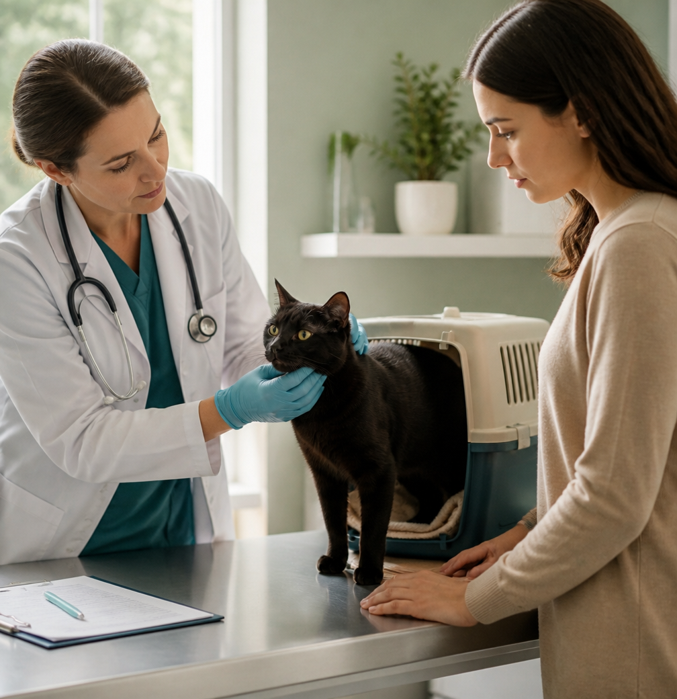
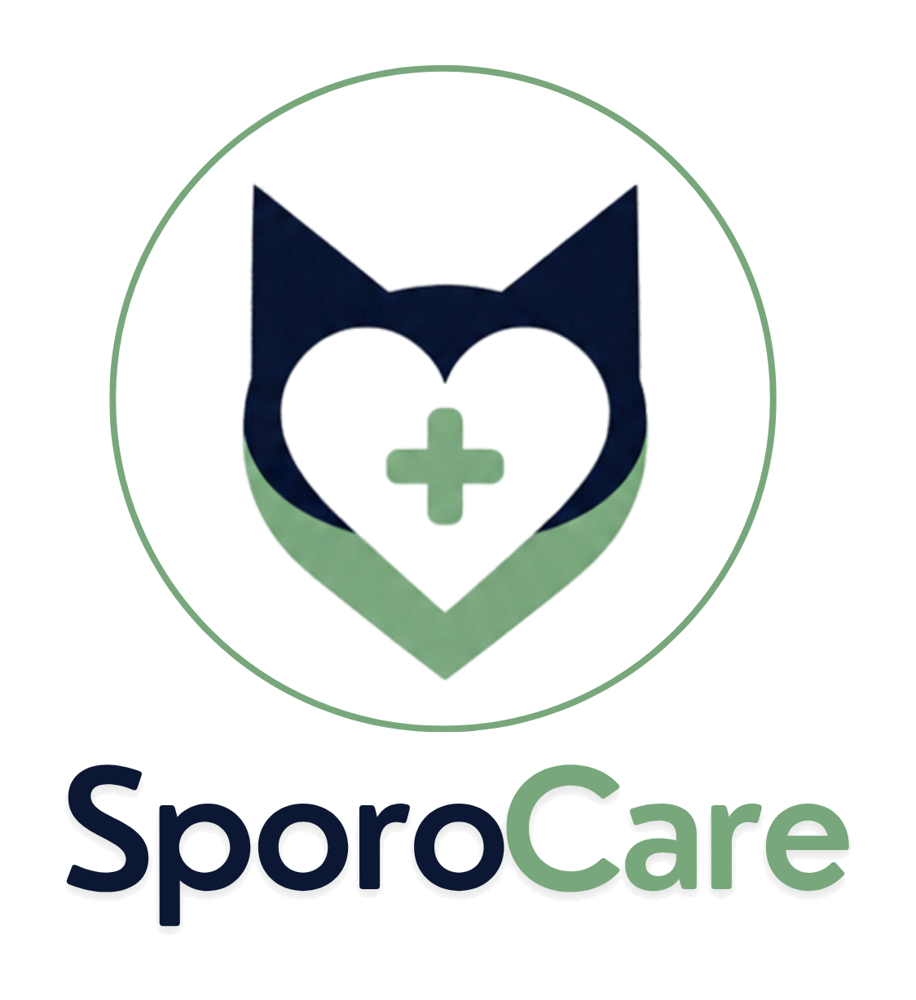

GUIA EDUCATIVO PARA TUTORES
MEU GATO TEM ESPOROTRICOSE, E AGORA?
Orientações práticas para você cuidar do seu animal com mais segurança, reduzir riscos em casa e acompanhar o tratamento com tranquilidade.

Por que este guia existe?
Informação acessível também faz parte do cuidado.
Estudos brasileiros apontam conhecimento parcial da população sobre zoonoses transmitidas por gatos, especialmente a esporotricose. Por isso, este projeto transforma informações científicas em orientações práticas para o tutor.
Fonte: Rodrigues, Malta & Ferro (2017), Fiocruz.
Cuidar de um gato com esporotricose envolve rotina, atenção e medidas de biossegurança em casa. Nosso objetivo é ajudar você a compreender esses cuidados com linguagem clara e acolhedora. O conteúdo é educativo e não substitui a avaliação do médico-veterinário, que define a conduta para cada animal.
Escolha por onde começar
Seis passos para organizar o cuidado em casa. Você pode seguir a ordem ou ir direto ao que precisa agora.
-
01
Cuidados
Proteja você e sua família durante o manejo do gato.
Ver seção -
02
Manejo de lesões
O que fazer e o que evitar ao cuidar da ferida.
Ver seção -
03
Administração de medicações
Regularidade e atenção para o tratamento dar certo.
Ver seção -
04
Contenção segura
Menos estresse para o animal e mais segurança para você.
Ver seção -
05
Isolamento domiciliar
Como preparar um espaço exclusivo para o seu gato.
Ver seção -
06
Sinais de alerta
Quando parar e procurar o veterinário.
Ver seção

Cuidados · Biossegurança em casa
Proteja você e o seu gato
O contato com gatos infectados é uma importante via de transmissão zoonótica da esporotricose. Durante o manejo de animais suspeitos ou diagnosticados, devem ser adotadas medidas de proteção.
- Luvas
- Lavar as mãos
- Materiais separados
Checklist de cinco hábitos
Referências: Lloret et al. (2013); Gremião et al. (2021); Montenegro et al. (2014). Ver lista

Lesões · Manejo das lesões
Cuide da ferida sem improvisar
As lesões da esporotricose podem apresentar ulceração e secreção. O manejo deve seguir exatamente a orientação do veterinário responsável.
Faça
- Use os materiais e produtos indicados pelo veterinário.
- Mantenha o ambiente organizado e use luvas.
- Observe as lesões e relate qualquer mudança ao veterinário.
Não faça
- Não aplique produtos caseiros, pomadas ou antissépticos por conta própria.
- Não remova crostas nem esprema lesões.
- Não mude a frequência de limpeza sem orientação.
Importante: não tente remover crostas, espremer lesões ou modificar a frequência de limpeza sem orientação profissional.
Referências: Gremião et al. (2021); Lloret et al. (2013). Ver lista

Medicação
O tratamento precisa de regularidade
A adesão do tutor ao tratamento é um dos fatores importantes para o sucesso terapêutico. O medicamento, a dose, o intervalo e a duração devem ser definidos pelo médico-veterinário.
Siga a prescrição veterinária e não interrompa o tratamento sem orientação, mesmo que o gato pareça melhor.
Siga a prescrição
Administre exatamente como foi orientado.
Facilite a rotina
Use alarmes e mantenha um registro dos horários.
Observe o animal
Se notar reação inesperada, entre em contato com o veterinário.
Não interrompa sozinho
Mesmo que as lesões melhorem, não pare o tratamento sem orientação.
Se o gato cuspir ou vomitar a medicação: não repita a dose por conta própria. Entre em contato com o veterinário para saber como proceder.
Referências: Lloret et al. (2013); Gremião et al. (2021). Ver lista

Contenção
Menos estresse, mais segurança
Quando o veterinário orientar a manipulação em casa, um cobertor ou toalha pode ajudar a limitar movimentos e proteger o tutor e o animal.
Checklist de quatro práticas
Referências: Lloret et al. (2013); Gremião et al. (2021). Ver lista
Vídeos educativos sobre contenção e manejo
Materiais de terceiros hospedados no YouTube. Eles complementam, mas não substituem, as orientações escritas acima nem a conduta indicada pelo seu veterinário.
Se o vídeo não carregar aqui (a incorporação pode ser bloqueada pelo YouTube ou pelo ambiente em que o site é aberto), use o link “Assistir no YouTube” abaixo de cada vídeo.
Referências de manejo: Lloret et al. (2013); Gremião et al. (2021). Ver lista

Isolamento domiciliar
Prepare um espaço exclusivo
O isolamento ajuda a reduzir oportunidades de contato do animal infectado com pessoas e outros animais. O período e as condições do isolamento devem ser definidos pelo veterinário.
Checklist de cinco cuidados
Referências: Lloret et al. (2013); Gremião et al. (2021). Ver lista
Sinais de alerta
Quando procurar ajuda
Não espere para tirar dúvidas importantes
Se você notar qualquer um dos sinais abaixo, pare a tentativa de manejo e entre em contato com o veterinário responsável.
- Piora ou aparecimento de novas lesões.
- Reação inesperada após a medicação.
- Dificuldade para administrar o tratamento.
- Mordida ou arranhadura durante o manejo.
- Qualquer mudança importante no estado geral do animal.
Se ocorrer mordida ou arranhadura, procure também um serviço de saúde.
Em caso de dúvida, entre em contato com o médico-veterinário responsável.
Referências: Lloret et al. (2013); Gremião et al. (2021). Ver lista
Orientação ao tutor
Quando procurar ajuda
Em caso de dúvida, fale com o médico-veterinário responsável.
Feridas ou lesões suspeitas
Lesões suspeitas, ou qualquer alteração nas lesões que já existem, devem ser avaliadas por um médico-veterinário. Não manipule, limpe ou trate as lesões por conta própria: siga apenas o que o profissional orientou.
Mudanças no estado geral do animal
Alterações preocupantes no comportamento, na alimentação ou no estado geral do gato justificam entrar em contato com o profissional responsável. Não é preciso tentar descobrir a causa: o veterinário fará a avaliação.
Dúvidas durante o tratamento
Procure o médico-veterinário responsável sempre que tiver dúvidas sobre medicamentos, administração, curativos, isolamento, evolução do quadro ou outras condutas. Perguntar faz parte do cuidado.
Esta seção orienta quando buscar o veterinário. Os sinais de alerta acima listam situações em que o manejo em casa deve ser interrompido.
Perguntas frequentes
Dúvidas comuns dos tutores
Sim. O contato com gatos infectados é uma importante via de transmissão zoonótica da esporotricose. Por isso, use luvas ao ter contato com lesões, secreções ou materiais potencialmente contaminados, evite mordidas e arranhaduras e lave bem as mãos depois. Se ocorrer mordida ou arranhadura, procure um serviço de saúde.
Não. Mesmo que as lesões melhorem, não interrompa o tratamento sem orientação do veterinário. O medicamento, a dose, o intervalo e a duração são definidos por ele.
Não. Não aplique produtos caseiros, pomadas ou antissépticos por conta própria. Use somente os materiais e produtos indicados pelo veterinário e relate qualquer mudança nas lesões.
Não repita a dose por conta própria. Entre em contato com o veterinário para saber como proceder.
Este guia não define um prazo. O período e as condições do isolamento devem ser estabelecidos pelo veterinário responsável pelo caso, e não devem ser alterados sem a orientação dele.
Pare e peça orientação ao veterinário. Evite perseguir o animal pela casa: prepare o ambiente antes de começar, faça movimentos calmos e nunca aperte o tórax ou dificulte a respiração.
Orientações gerais de manejo e prevenção fundamentadas nas diretrizes: Lloret et al. (2013); Gremião et al. (2021). Ver lista
Este guia não substitui o veterinário.
O diagnóstico, a prescrição, o acompanhamento do tratamento e a definição das condutas para cada animal devem ser realizados pelo médico-veterinário.
QUANDO PROCURAR AJUDA
Quem nós somos
A equipe por trás do SporoCare
A SporoCare é formada por seis alunas do sexto semestre de Medicina Veterinária da PUC-Campinas.
O site foi desenvolvido como parte de um projeto integrador, com o objetivo de oferecer informações educativas e apoio aos tutores de gatos durante o tratamento da esporotricose.
Seja nosso parceiro!
Se você é tutor, profissional, instituição ou organização e quer conhecer ou apoiar o projeto educativo SporoCare, será um prazer conversar com você. Juntos, podemos levar informação acessível a mais famílias.
QUERO SER PARCEIRO (abre o WhatsApp em nova aba)Referências científicas
Fontes utilizadas na elaboração do guia
-
Gremião, I. D. F. et al. Guideline for the management of feline sporotrichosis caused by Sporothrix brasiliensis and literature revision. Brazilian Journal of Microbiology, 2021. DOI: 10.1007/s42770-020-00365-3.
-
Lloret, A. et al. Sporotrichosis in cats: ABCD guidelines on prevention and management. Journal of Feline Medicine and Surgery, 2013;15(7):619–623. DOI: 10.1177/1098612X13489225.
-
Montenegro, H. et al. Feline sporotrichosis due to Sporothrix brasiliensis: an emerging animal infection in São Paulo, Brazil. BMC Veterinary Research, 2014;10:269. DOI: 10.1186/s12917-014-0269-5.
-
Rodrigues, D. K. B.; Malta, E. D. V. M.; Ferro, L. O. Análise do conhecimento sobre as principais zoonoses transmitidas por gatos. Cadernos Ibero-Americanos de Direito Sanitário, 2017;6:742–752.
Materiais institucionais complementares
-
CRMV-PR. Guia sobre esporotricose felina para a rotina clínica.
-
CRMV-MG. Material informativo sobre esporotricose.